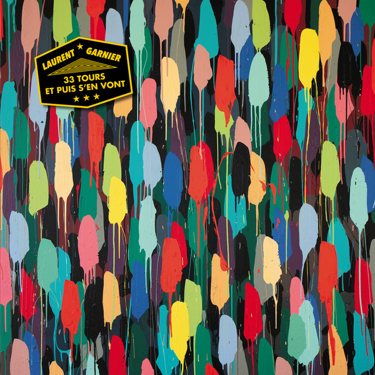

Laurent Garnier - 33 Tours Et Puis S en Vont



Información del álbum facilitada por discogs.com:
Fecha de lanzamiento: 2023
Géneros: Electronic
Estilos: Techno
Pais: France
Votos: Media de 4.09 con 22 votos
Sello: Karat Records
Tracklist:
A1. Tales From The Real World (Version Instrumentale) 11:08
A2. Liebe Grüße Aus Cucuron 10:22
B1. Reviens La Nuit (DJ Edit) 11:44
B2. On The Record (Part 3) 9:24
C1. Saturn Drive Triplex (feat. Alan Vega) 9:42
C2. Closer To You (feat. Scan X) 9:08
D1. Sake Stars Fever 9:53
D2. Cinq O Clock In Le Matin 8:38
E1. In Your Phase (feat. 22Carbone) 8:12
E2. Give Me Some Sulfites 10:11
F1. Au Clair De Ta Lune 11:05
F2. Granulator Bordelum 9:08